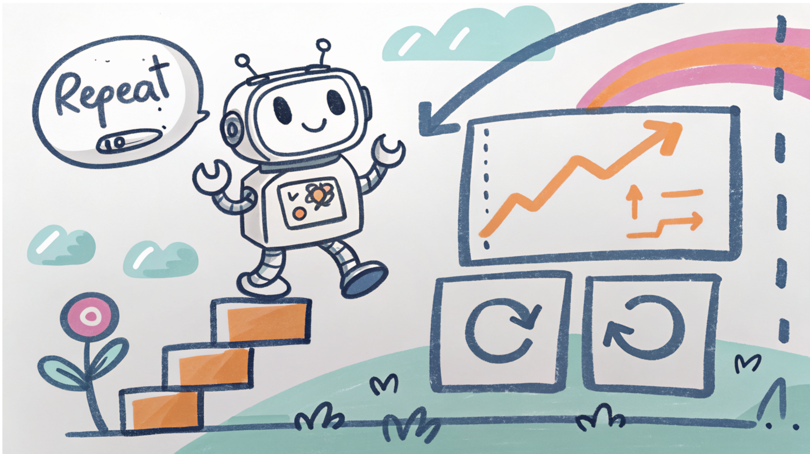

Objectifs de la formation
Cette formation vise à fournir une compréhension rigoureuse et opérationnelle des méthodes modernes d’apprentissage par renforcement et d’optimisation séquentielle, avec un accent particulier sur les approches à base de bandits manchots. Les objectifs sont les suivants :
- Étudier les algorithmes de bandits stochastiques, en particulier les modèles linéaires et à noyaux, ainsi que leurs propriétés théoriques (minimisation du regret) et leurs applications, notamment en imagerie microscopique.
- Maîtriser les techniques d’estimation statistique et de construction de régions de confiance, en lien avec la régression (linéaire et non linéaire).
- Introduire les processus décisionnels de Markov (MDP) et les méthodes de programmation dynamique pour la prise de décision séquentielle.
- Comprendre les principes de la planification (planning), incluant les approches optimistes et les méthodes de recherche arborescente telles que Monte Carlo Tree Search (MCTS).
- Présenter les bases du contrôle linéaire et du contrôle robuste, en intégrant la gestion de l’incertitude.
- Introduire les fondements de l’apprentissage par renforcement profond (Deep RL) et de l’approximation de fonctions.
- Analyser les limites des méthodes profondes, notamment en termes de stabilité, d’exploration et d’efficacité en données.
Compétences acquises
À l’issue de la formation, les participants seront capables de :
- Modéliser des problèmes d’apprentissage séquentiel et appliquer des stratégies de type bandits manchots avec analyse du regret.
- Mettre en œuvre et comparer des algorithmes tels que Upper Confidence Bound (UCB) et Thompson Sampling (TS).
- Estimer des modèles linéaires et quantifier les incertitudes associées.
- Formaliser un problème sous forme de MDP et appliquer des méthodes de programmation dynamique.
- Adapter des algorithmes de planification (optimiste, MCTS et variantes).
- Utiliser des méthodes d’apprentissage par renforcement avec approximation de fonctions.
- Appréhender des algorithmes avancés tels que LSPI, DQN, PPO, SAC.
Public cible
Cette formation s’adresse principalement aux ingénieurs, chercheurs et développeurs souhaitant acquérir une expertise en apprentissage par renforcement et en optimisation séquentielle.
La formation peut être délivrée en français ou en anglais, les supports étant en anglais.
Domaines d’application
Les méthodes présentées s’appliquent à une grande variété de contextes :
- Environnements simulés : jeux, robotique, systèmes de recommandation, essais cliniques (optimisation de protocoles), navigation autonome, entraînement de modèles de langage.
- Environnements réels : robotique embarquée, agroécologie, réglage de systèmes physiques.
Un enjeu central dans les environnements réels est la rareté des données, nécessitant des approches efficaces en échantillons, combinant modélisation des incertitudes et dynamique des systèmes.
Pré-requis
Les participants doivent maîtriser les notions fondamentales suivantes :
- Variables aléatoires
- Espérance et variance
- Bases de la régression linéaire
Un questionnaire de "on-boarding" préparé en amont permet d'adapter la formation aux connaissances des participants.
Programme
Introduction aux bandits
- Formalisation du problème
- Compromis exploration/exploitation
- Notion de regret
Bandits pour l’optimisation de fonctions
- Régression linéaire et méthodes à noyaux
- Bandits linéaires et bandits à noyaux
- Construction de bornes de confiance
- Application : optimisation en imagerie microscopique
Processus décisionnels de Markov (MDP)
- Définition et propriétés
- Programmation dynamique (value iteration, policy iteration)
Planification
- Planification optimiste
- Monte Carlo Tree Search (MCTS) et variantes
- Application : navigation de cathéter en environnement contraint
Contrôle linéaire et robuste
- Modèles dynamiques linéaires
Propagation des incertitudes - Planification robuste
- Application : conduite autonome et évitement de collision
Approximation de fonctions
- Représentations linéaires et non linéaires
- Méthodes acteur-critique
- Problèmes de convergence et instabilité
Deep Reinforcement Learning
- Présentation des principales bibliothèques
- Présentation des algorithmes (DQN, PPO, SAC)
- Stratégies d’exploration en grande dimension
- Bonnes pratiques et limites (efficacité en données, robustesse)